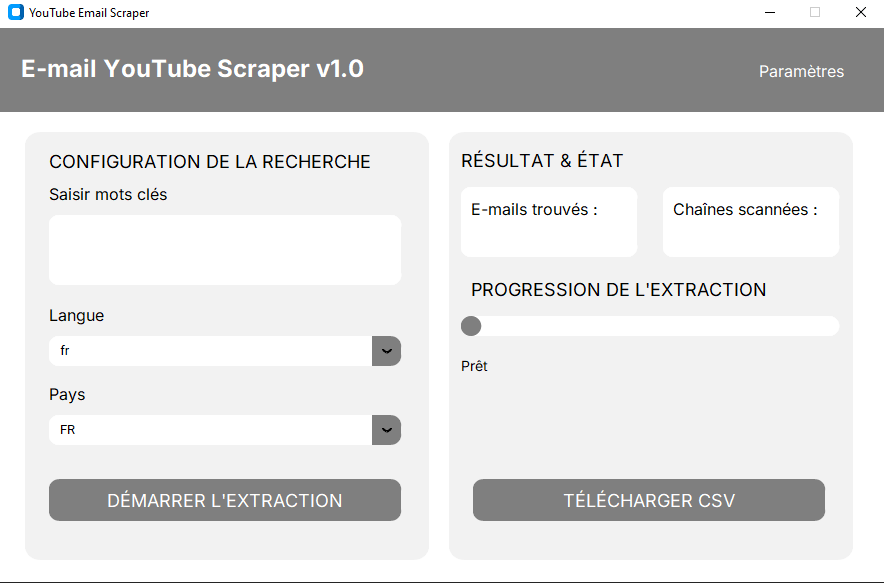

La recherche manuelle de créateurs YouTube correspondant à une thématique donnée peut être longue lorsqu'il faut identifier les chaînes pertinentes, consulter leurs informations et rechercher leurs coordonnées de contact dans leurs descriptions.

Capture d'écranLe contexte
La recherche de chaînes YouTube peut nécessiter de parcourir de nombreuses chaînes avant de trouver celles qui correspondent réellement à une thématique ou à une zone géographique donnée. La récupération manuelle des informations et la recherche de coordonnées de contact rendent également le processus répétitif. Dans ce projet, l'objectif était de développer une application permettant d'automatiser cette collecte à partir de critères définis par l'utilisateur : mot-clé, langue et pays.
L'objectif : Automatiser la recherche de chaînes YouTube et l'identification des coordonnées de contact disponibles publiquement dans leurs descriptions, puis centraliser les informations dans un format exploitable..
L'approche
J'ai développé une application desktop permettant d'interagir avec YouTube Data API v3 afin de rechercher les chaînes correspondant aux critères définis par l'utilisateur.
Le développement s'est concentré sur l'automatisation de la collecte et la structuration des informations récupérées :
Le résultat
L'application permet désormais de transformer une recherche manuelle en un processus automatisé. Les chaînes correspondant aux critères définis sont collectées et leurs informations sont regroupées dans une structure commune. Les résultats peuvent ensuite être exportés sous forme de CSV afin d'être réutilisés pour l'analyse, la qualification ou d'autres processus de traitement de données.
Stack technique